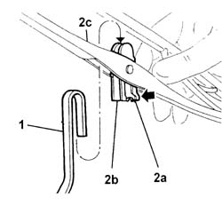

5050B28 windscreen wiper blade/s - r+r
- Path
- Procedures > 50 AUXILIARY UNITS > 5050 SCREEN WASHERS AND HEADLAMP WASH/WIPE > 5050B windscreen wash/wipe > 5050B28 windscreen wiper blade/s - r+r
- Kind
- repair procedure (removal / refitting; the operation number is the code)
- Applies to
- all engines; all production periods
- Interactive page
- https://sloeber94.github.io/elrnDB-fDbl/en/#/2584860
Applies to: all engines; all production periods
 Removing
Removing
 Refitting
Refitting1. Lift up the wiper arm.
2. Press on the lug (2a) of the support (2b) and withdraw the blade (2c) from the end of the arm.

Applies to: all engines; all production periods
Refitting
RemovingCheck that the blade is not damaged, that the pins do not have excessive play and that the blade profile is intact.
Fit the support in the end of the arm and engage the retainer.
Lower the wiper arm.
Check that the window wiper is working properly.